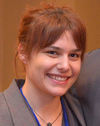

Find us on Twitter
Find us on TwitterAnalysis and Modeling Team
This team is working to integrate economic and climate data into the cropping systems database established by the field research team, for life cycle analysis and predictve modeling.
Learn more about Analysis and Modeling Team activities HERE.
Jump to specific team members...
Anex
| Robert P. Anex, Jr. (Rob) Principal Investigator; Obj. 3 (lead) University of Wisconsin Faculty Web site Professor - Agr and Biosystems Engineering |
|||
Lei Gu |
 |
Ao Li |
|
| Not Pictured: | Magdalena Necpalova |
| Post Doctoral Researcher |
Arritt
 |
Raymond W. Arritt |
| Not Pictured: | Landon Bunderson |
Daryl Herzmann |
Basso
| Not Pictured: | Bruno Basso |
| Not Pictured: | Ryan Nagelkirk |
| PhD Graduate Student |
Bowling
Laura Bowling |
Castellano
| Michael Castellano (Mike) Principal Investigator; Obj. 1 & 2; Iowa State University Faculty Web site Assistant Professor - Agronomy |
|||
Kling
Catherine L. Kling (Cathy) |
Philip W. Gassman (Phil) |
|
|
|
|
Miguez
 |
Fernando E. Miguez |
Andrea Basche |
| Not Pictured: | Guillermo Marcillo |
O'Neal
| Not Pictured: | Matthew O'Neal (Matt) |
Owens
| Not Pictured: | Phillip Owens |
|  | Jenette (Goodman) Ashtekar |
We're scientists and farmers working together to create a suite of practices for corn-based systems that:
- are resilient in times of drought
- reduce soil and nutrient losses under saturated soil conditions
- reduce farm field nitrogen losses
- retain carbon in the soil
- ensure crop and soil productivity
Sustainable Corn BLOG
Farmers and scientists in the Corn Belt discussing cover crops, weather, tillage, drainage water managment and much more.
Sustainable Corn YouTube Channel
USDA-NIFA Award No.: 2011-68002-30190